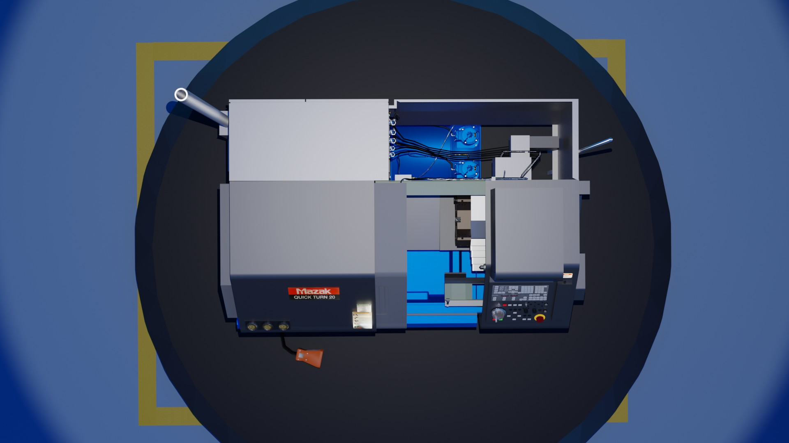
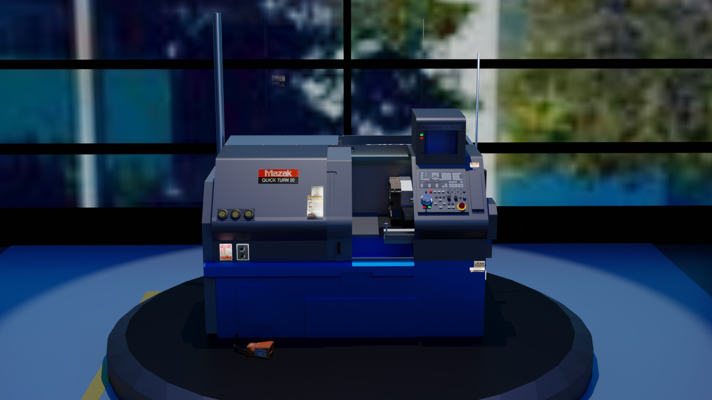
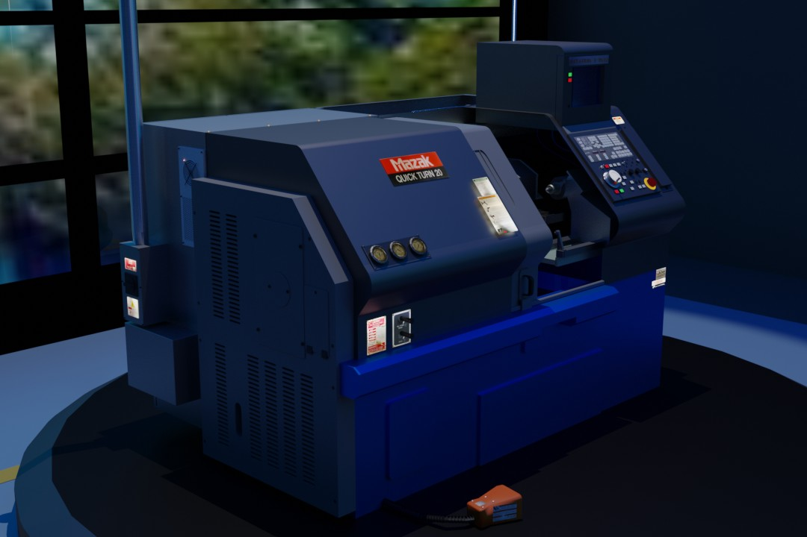
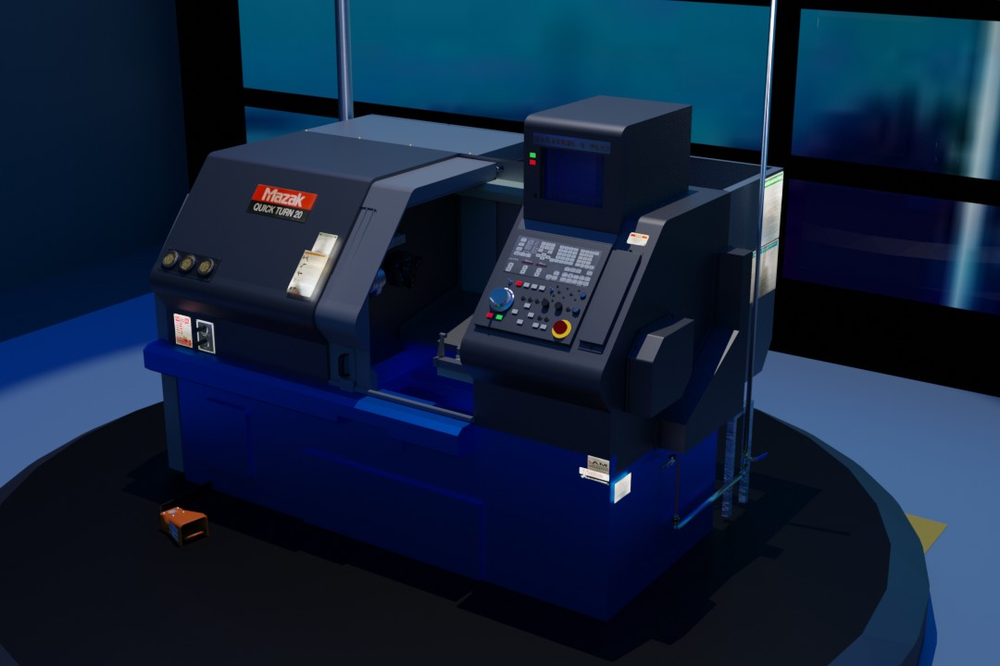

Proyecto desarrollado en equipo enfocado en el modelado tridimensional de maquinaria industrial, configuración de materiales, iluminación de entorno, renderizado de vistas técnicas y animación de presentación en Blender.

Render 01 — Vista Superior (Planta)

Render 02 — Vista Frontal en Entorno

Render 03 — Perspectiva Angular (Izquierda)

Render 04 — Perspectiva Angular (Derecha)